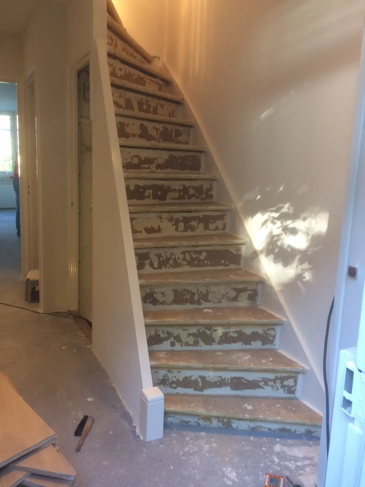
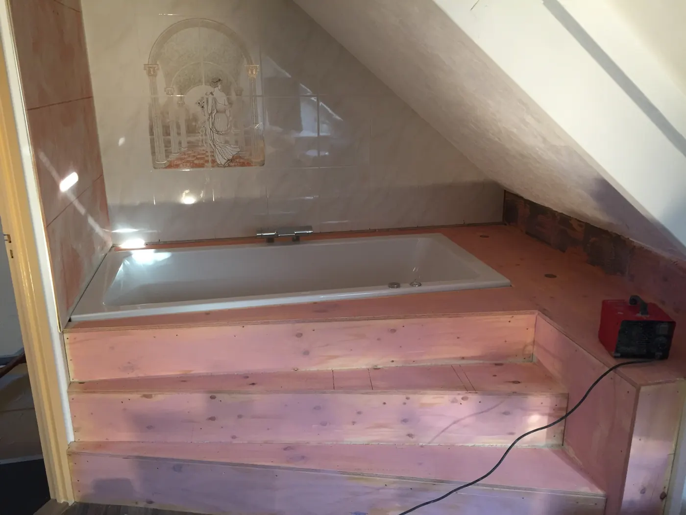
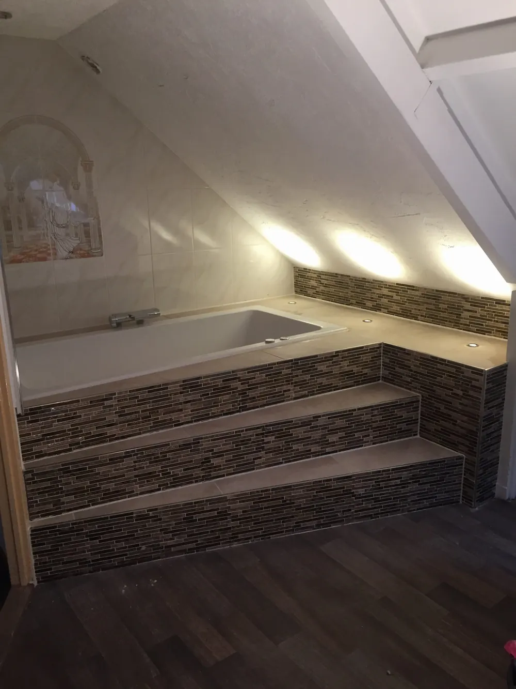
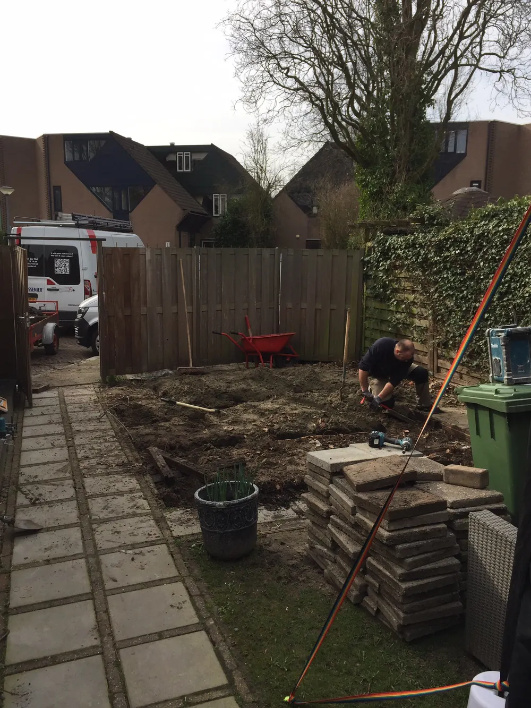
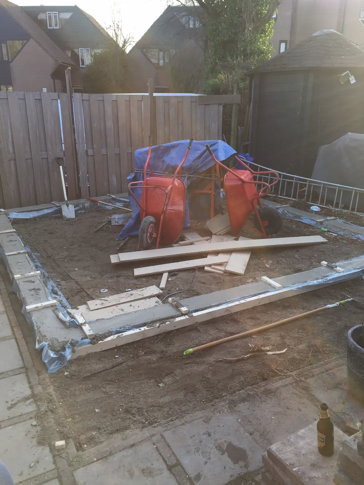
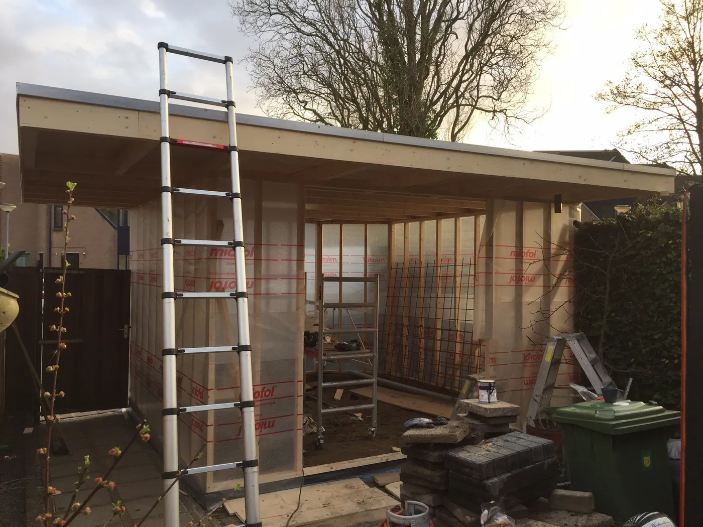
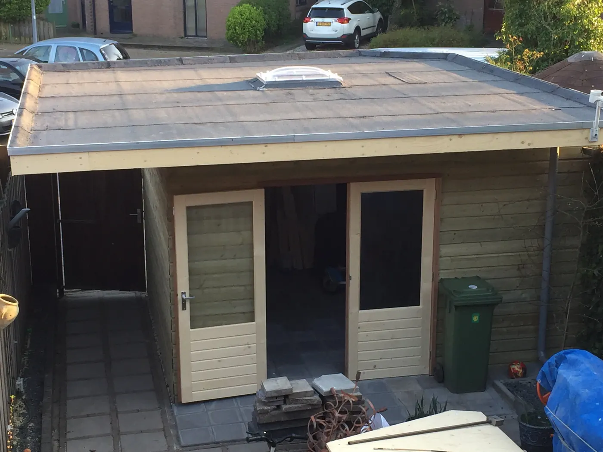

Voor Na
NaProjecten
Alle foto's komen uit eigen projecten van MSBouw. Sleep over de foto's om het voor en na te zien.
Voor en na

VoorNa Voor
Voor
 Na
Na
Voor
NaBouwverloop
Van een kale tuin tot een afgewerkt houten tuinhuis. Scroll mee door het bouwproces.





Meer werk